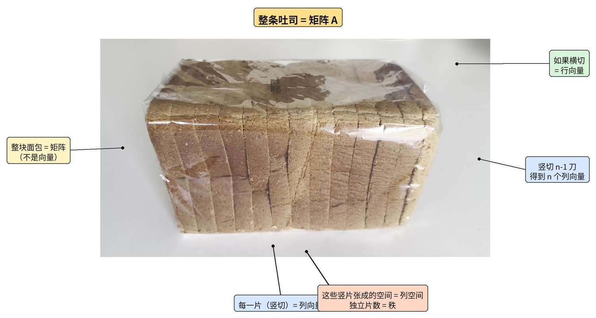
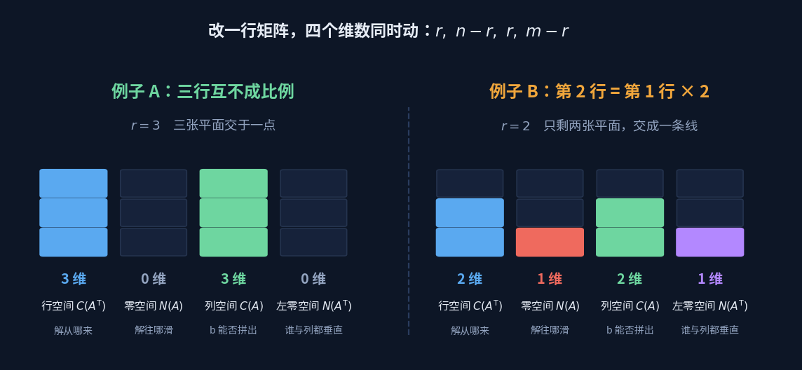

矩阵与变换
Matrices & Transformations
矩阵不是一张数表，是一次空间的形变。看它把单位立方体压成了什么样，就知道了它的一切。
上一板块最后那张表里，同一道题因为条件数不同，答案有时是一整张平面、有时是一条直线、有时恰好两个点。
那些"维数"在这里会各自长出一个几何形状。
没走过那道坎的话，先看 从"四点共面"走进线性代数—— 一道高中题，把张成、秩、线性相关这几个词一次走完。
先认清它是什么
矩阵不是向量，也不是一堆散数。它是一叠列向量摞在一起。

整条吐司是矩阵 $A$。竖着切一刀得到一片，那是一个列向量。 这些片能张成的空间就是列空间， 而真正独立的片数就是秩——两片一模一样的话，它俩只算一片。
一条主线：撑开与塌陷
认清了形状，再看运算。矩阵 $A$ 乘以向量 $\mathbf x$， 最容易被当成"按行点乘"的机械操作。但换个读法，整件事会立刻变清楚：竖着读。
$A\mathbf x=x_1\mathbf a_1+x_2\mathbf a_2+x_3\mathbf a_3$
$\mathbf x$ 不是被"作用"的对象，它是一张配方单：
告诉你 $A$ 的三个列向量各取多少份，首尾相接加起来。
这一句话把后面的东西全都带出来了：
列撑出什么，就能到达什么
三个列的所有加权组合，构成列空间。$A\mathbf x=\mathbf b$ 有解， 当且仅当 $\mathbf b$ 落在列空间里——够不着的地方，配方单再怎么调也配不出来。
撑开了几维，就是秩
三个列如果撑满三维，$\det\ne0$，每个 $\mathbf b$ 都恰好有一张配方单。 如果第三列落在前两列的平面上，它就是多余的——秩掉到 2，列空间塌成一张平面。
塌掉的那个方向，就是零空间
秩不足意味着存在非零的 $\mathbf x$ 使 $A\mathbf x=\mathbf 0$：某张非空的配方单， 配出来却是原点。这些 $\mathbf x$ 组成零空间，它正是被压扁时丢掉的那个维度。
撑开的维数 + 塌掉的维数 = 出发时的维数，一个都不会凭空消失
五个可以拖的演示
下面五个按顺序看下来，就是上面这条主线：从"$A\mathbf x$ 到底在算什么"， 一路到四大空间。每个都能拖动旋转、改矩阵元素。
四个概念
列空间 Column Space
- 是什么
- $A$ 的所有列向量的线性组合，记作 $C(A)$。
- 在量什么
- $A$ 这台机器能到达的全部地方。$A\mathbf x=\mathbf b$ 有解 $\iff\mathbf b\in C(A)$。
- 结构位置
- 维数就是秩。$3\times3$ 矩阵的列空间是三维（满秩）、一张平面（秩 2）、一条线（秩 1）或一个点（零矩阵）。
- 塌陷意味着
- 有些 $\mathbf b$ 永远够不着——方程无解，不是解错了，是本来就不在射程内。
零空间 Null Space
- 是什么
- 所有满足 $A\mathbf x=\mathbf 0$ 的 $\mathbf x$，记作 $N(A)$。
- 在量什么
- 被 $A$ 压没了的那些方向。它一定过原点，因为 $A\mathbf 0=\mathbf 0$ 永远成立。
- 结构位置
- $A\mathbf x=\mathbf b$ 的通解 = 任意一个特解 $+$ 整个零空间。零空间越大，解越不唯一。 上一板块里"答案写成 $k(3,-1,1)$"的那个 $k$，就是零空间的一维自由度。
- 只有原点意味着
- 没有方向被压掉，$A$ 可逆，每个 $\mathbf b$ 对应唯一的 $\mathbf x$。
秩 Rank
- 是什么
- 列空间的维数。也等于行空间的维数——这两个数总是相等。
- 在量什么
- 矩阵里"真正独立的信息有几条"。行和列是同一批信息的两种排法，所以从哪边数都一样多。
- 结构位置
- $\text{rank}+\text{nullity}=n$。撑开的加上塌掉的，等于出发时的维数。 高斯消元里"非零行的个数"，量的就是它。
- 不足意味着
- $\det=0$、不可逆、列线性相关、零空间非平凡——同一件事的四种说法。
$A^{\mathsf T}A$ Gram Matrix
- 是什么
- $A$ 转置乘 $A$，永远是方阵、对称、半正定。
- 在量什么
- 它把长度信息拉了出来：$\mathbf x^{\mathsf T}A^{\mathsf T}A\mathbf x=\lVert A\mathbf x\rVert^2$。 想知道 $A\mathbf x$ 有多长，不必真的算出 $A\mathbf x$。
- 结构位置
- 最小二乘要最小化 $\lVert A\mathbf x-\mathbf b\rVert^2$，求导得到正规方程 $A^{\mathsf T}A\mathbf x=A^{\mathsf T}\mathbf b$。下一板块整个建在这个式子上。
- 不可逆意味着
- $A$ 的列线性相关，最小二乘解不唯一——数据里有冗余的自变量。
四个空间，一个数字
把方程组的四个空间摆在一起看，会发现它们不是四件事—— 四个维数全由秩 $r$ 一个数决定：$r,\ n-r,\ r,\ m-r$。

左边那组三行互不成比例，秩满，两个零空间都只剩原点。 右边只改了一件事——把第 2 行换成第 1 行的两倍——秩掉到 2， 于是行空间和列空间各瘦一维，两个零空间各胖一维。加起来的总数一点没变。
$\mathbb{R}^n=C(A^{\mathsf T})\oplus N(A)$ $\mathbb{R}^m=C(A)\oplus N(A^{\mathsf T})$
出发的空间被劈成两半：一半是解的来处，一半是解滑动的方向。
到达的空间也被劈成两半：一半够得着，一半永远够不着。
线性相关不是计算事故，是独立方向变少了。
秩一降，四个空间同时改变形状。
用三张具体的平面把这件事走一遍，比记定义管用得多—— 两行成比例且右边对得上，是同一张平面；成比例但右边对不上，是两张平行面永不相交； 不成比例，才是两张真正交叉的平面。
请输入友情码
Enter the friendship code
线索：首页那句话是谁说的？填他的姓，拼音或英文都行。
Hint: who said the line on the homepage? His surname will do.
不对，再想想 Not quite — try again
回头看那些实战
舵机标定那页拟合三阶多项式，本质就是在解一个超定的 $A\mathbf x=\mathbf b$： 61 行方程、4 个未知系数，$\mathbf b$ 不在列空间里，所以退而求其次找最近的点—— 那次求解走的正是 $A^{\mathsf T}A\mathbf x=A^{\mathsf T}\mathbf b$。
而 S 曲线那个三元方程组只有 6 个条件、6 个系数，$\det=2\ne0$， 秩满、零空间只有原点，所以解唯一。同一个框架，两种结局，区别只在秩。